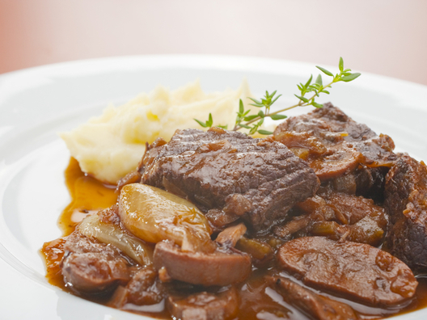

Пълнен гювеч по бургаски
Продукти:
- първи ред в гювеча – свински вратни пържоли
- втори ред – пилешки пържоли от бут
- трети ред – наденица свинска сурова
- четвърти ред – най-отгоре се слагат сарми пълнени с ориз и кайма, също чушки пълнени с кайма и ориз
- за 10 човека
- 1 кг пържоли вратни свински
- 1 кг – пилешки пържоли от бутче
- 0,800 г сурова наденица
Начин на приготвяне:
Сармите се правят и чушките са по преценка на готвача.